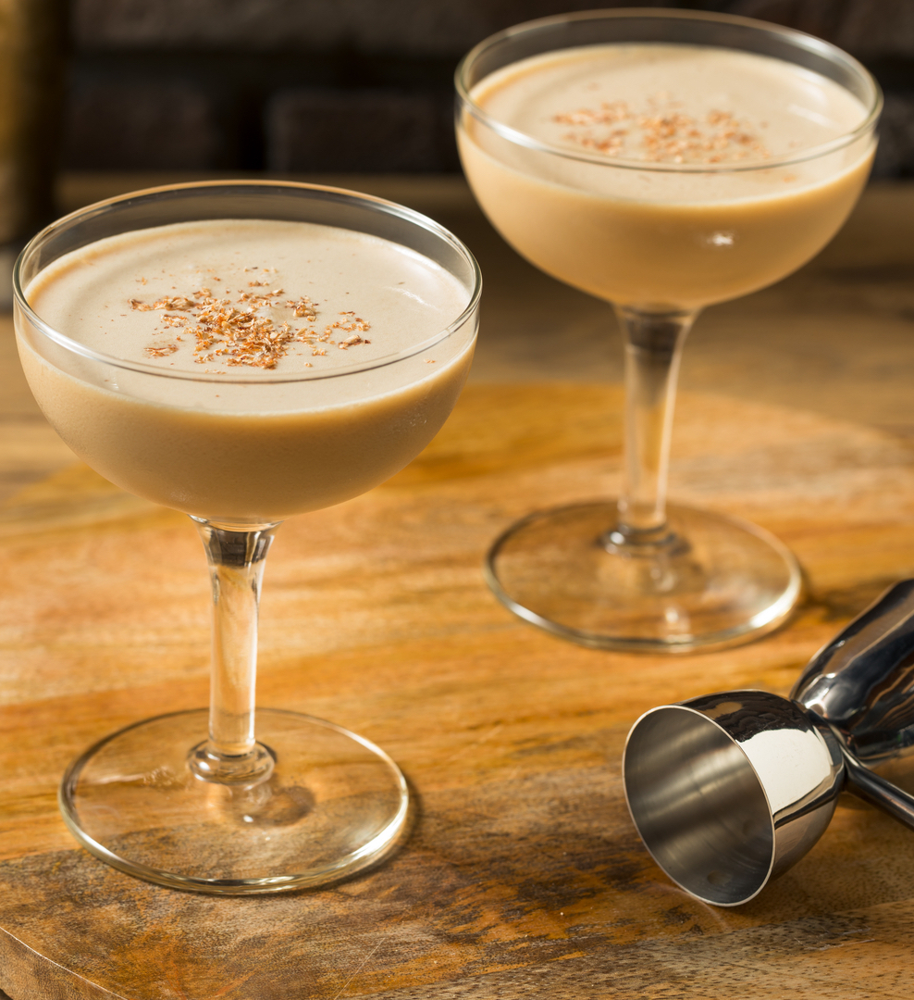

The Asbach Alexander is an adaptation of the "Brandy Alexander". Asbach brandy is used in the drink instead of American brandy. Hugo Asbach founded the company Asbach Uralt in 1892 in the town of Rüdesheim am Rhein. Asbach learned the distillery trade at the local "Export-Company for German Cognac" and furthered his knowledge in France. He founded his own company that started to produce Cognac in 1892 which soon became popular. After World War 1, when the Treaty of Versailles decreed that the word Cognac could only be used for French products, Asbach coined the term Weinbrand for German brandy. Up to today, Asbach Uralt is one of the best known German brandy trademarks. The drink Brandy Alexander was created in the early 20th centery in America, although there are many different stories on where the name Alexander originated from. Some stories talk of a baseball player who won the World Series and others talk of bartenders with the name.
Pour brandy, Crème de Cacao and double cream into a cocktail shaker, add a generous amount of ice. Shake until outside of shaker feels very cold. Strain into chosen cocktail glass. To make garnish mix the sugar, nutmeg and cinamon. Sprinkle garnish mix over top of drink.